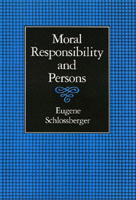

Argues that we are responsible not so much for what we do as for who we are
Argues that we are responsible not so much for what we do as for who we are


 Argues that we are responsible not so much for what we do as for who we are
Argues that we are responsible not so much for what we do as for who we are

|  |
Moral Responsibility and PersonsEugene Schlossbergercloth EAN: 978-0-87722-879-0 (ISBN: 0-87722-879-5) |
"This is a fine book. The scholarship is careful, thorough, and fair.... The themes are of central philosophical importance. And most of all, the thesis is both novel and (after the author’s able argument) plausible."
—Lawrence C. Becker, College of William and Mary
Challenging traditional philosophical views of moral responsibility, Eugene Schlossberger argues that we are responsible not so much for what we do as for who we are. He explores what it means to be a person, concluding that personhood is the sum of beliefs and values—which are by no means entirely within our control. Consequently, the voluntariness of our acts—or even whether we act at all—is irrelevant to the moral evaluation of us as persons. Schlossberger contends that we are to be judged morally on the basis of what we are, our "world-view," rather than what we do.
In Moral Responsibility and Persons Schlossberger disputes various received philosophical positions. His challenging and entertaining account also examines psychology and its view of the nature of personhood, as well as insanity and the "personality" of animals, children, and computers. He explores the validity of emotions we may feel in response to others—especially gratitude and resentment. And finally, Schlossberger tackles the inevitable implications of his position in the area of crime and punishment.
"The author puts forth a picture which is coherent and intriguing. The main project is to develop a theory of moral responsibility. He develops this theory with considerable ingenuity, and ties it to answers to traditional puzzles, such as the relationship between causal determinism and freedom to do otherwise, and the nature of personal identity.... The work is certainly original and very readable. It is an interesting and worthwhile book."
—John Martin Fischer, University of California, Riverside
Acknowledgments
1. Approaching Responsibility
Overview •
Problems with the Traditional View
2. Personhood
The General Concept of a Person •
Moral Personhood •
Problems of Personal Identity •
Concluding Remarks
3. A Theory of Responsibility
Defining Responsibility •
An Account of Responsibility •
Hume and Motives •
Objections
4. Determinism
Mental Derangement •
Mitigating Circumstances and Duress •
Inability and Choice •
Mind Tampering •
Summary
5. Punishment and Personal Emotions
Punishment and Retribution •
A Theory of Retribution •
Gratitude and Resentment
Appendixes
A. A Variant of PAP
B. Object-Stages
C. Perry on Personal Identity
D. Van Inwagen's Argument
E. The Nature of Emotions
F. George Sher on Desert
Notes
Index
Eugene Schlossberger is Associate Professor of Philosophy at Purdue University, Calumet.
© 2015 Temple University. All Rights Reserved. This page: http://www.temple.edu/tempress/titles/844_reg.html.